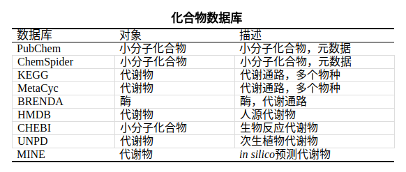
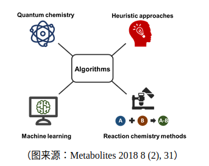

非靶向代谢组学可以从一个单一样品中检测获得几百或几千个代谢物相对丰度，然而，被检测到的代谢物中大部分都是未知物。因此，未知物的鉴定成为制约代谢组学研究及应用的瓶颈。
开展基于质谱技术的未知物结构解析，首先就得了解我们常用的质谱数据库有哪些，小编今天就来扒一扒常见的化合物数据库。
很多化合物的数据库都是完全开放的（至少在我们非商业化职使用的程度上），这一点我们必须得知道，就算这些化合物数据的存在一些盈利的点，至少对于化合物的基本信息是公信的。这些基本信息包括化合物的空间结构信息和生物学信息，比如Pubchem、ChemSpider或者Chemical Abstracts Database。公开的数据数据库囊括了1.2亿多个化合物信息，其中具有生物学相关性的化合物具统计有1百万-2百万条。
然而，通过对Metabolomics Workbench和MetaboLights这些数据公开的代谢组学实验共享平台的数据统计分析，发现非常少或者几乎没有研究能在非靶向代谢组学研究中，鉴定出的代谢物占被检测到的总代谢物数量的20% - 30%。这就意味着我们质谱中检测到的大部分母离子都不能被质谱数据库比对鉴定。

问题是这些化合物的分子信息数据库对我们未知物的鉴定有何意义呢？
第一种情况： 如果你对未知物的任何信息都不知道，只知道这是张二级质谱图，那么你可以先从收录质谱图最多的MoNA数据开始比对数据库（后续会推出常见的质谱数据库和如何通过软件对比数据库中的质谱图）。如果运气很少可以在MoNA数据库匹配到相似度较高的质谱图，但是非常可能得不到满意的结果。
第二种情况： 如果你可知道一些未知物信息或者样品的信息，包括未知物的极性、样品来源等，来有目的去选择数据库，限制搜索范围，可以大大减少假阳性的结果。比如，人源的代谢物则可以在Human Metabolome Database（HMDB）数据库检索，植物代谢物则可以在Universal Natural Product Database（UNPD）数据库进行解析，暴露组的相关研究，可以在一些环境类的数据库中进行分析。
如果这些化合物质谱信息数据库（下篇文章重点阐述）没有收录你需要鉴定的化合物二级质谱图，那么你得到依然是unknown，因此，基于计算机模拟的 In Silico质谱图就非常关键了。
第三种情况： 如果你遇到化合物是从没有在任何文献中报道，也从来没有被任何数据库中收纳，可以先从酶促扩增数据库开始检索，如Metabolic In Silico Network Expansion Databases（MINES）。MINES通过应用已知的酶促转化规则覆盖了来自KEGG和其他途径数据库的超过50万种物质。这些新型化合物并不包括在PubChem等传统数据库中，但可作为假设的起始分子用于结构解析（具体操作，我们会在后续的未知物鉴定版本持续推出）。即使，在MINES中也没有被匹配到，那么可以借助软件从化合物的元素组成，通过In Silico手段计算机模拟碎片组成来鉴定未知物。

当然，通过质谱信息来对未知物结构解析，如果不是质谱高端玩家，还需要了解一些软件，包括：MetFrag、MS-Finder、
SIRIUS CSI: Finger ID、CFM-ID、ChemDistiller、
MassFrontier等等（后续软件使用中推出）。
常用的化合物数据链接（持续更新）
MoNA：http://mona.fiehnlab.ucdavis.edu/
MINES：http://minedatabase.mcs.anl.gov/#/home
PubChem: https://pubchem.ncbi.nlm.nih.gov/
ChemSpider：http://www.chemspider.com/
KEGG：https://www.kegg.jp/
MetaCyc： https://metacyc.org/META/class-tree?object=Pathways
BRENDA：http://www.brenda-enzymes.org/
HMDB：http://www.hmdb.ca/
CHEBI：https://www.ebi.ac.uk/chebi/
UNPD：http://www.undp.org/content/undp/en/home.html
注：感谢好友Ivana提供资料！